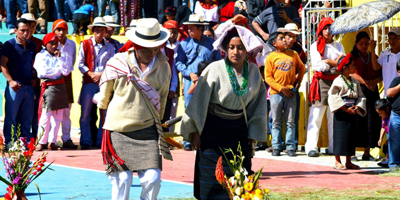

Posee la mayor cantidad de municipios, cuyos pobladores son herederos directos del pueblo maya. Posee la mayor cantidad de municipios, cuyos pobladores son herederos directos del pueblo maya. Posee sus propios grupos de danza tradicional, en que los bailadores representan escenas de la vida diaria, ritos alusivos a la fecha o acontecimientos especialmente que van acompañados, la mayoría de las veces, de bandas musicales y de su instrumento de batalla: la marimba, de la cual son especialistas y la que en las fiestas no puede faltar. Debido a su riqueza cultural, la tradición huehueteca se basa más en la palabra que en el documento escrito. Los consejos de ancianos poseen un valor trascendental, pues se consideran personas de profunda sabiduría, con experiencia para guiar la vida de la comunidad. Aunque la mayoría de los indígenas son cristianos católicos, no han abandonado sus costumbres tradicionales, como lo demuestra la existencia de cofradías como las organizaciones civiles donde los dirigentes de las comunidades son los Principales, o sea aquellas personas que han sobresalido y alcanzado un status superior, por los servicios que durante muchos años han prestado tanto en la municipalidad como en las cofradías, haciéndose merecedores al respeto y obediencia del resto de la población.
